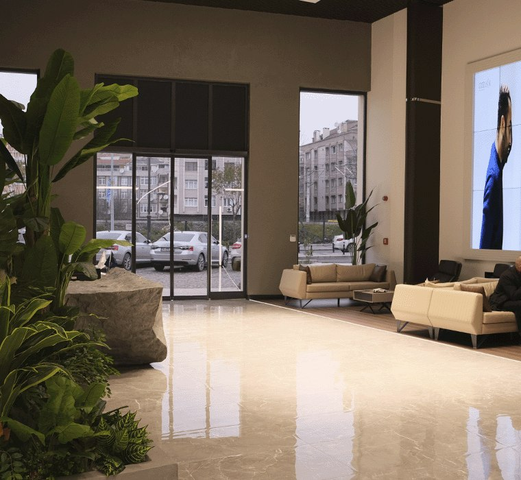
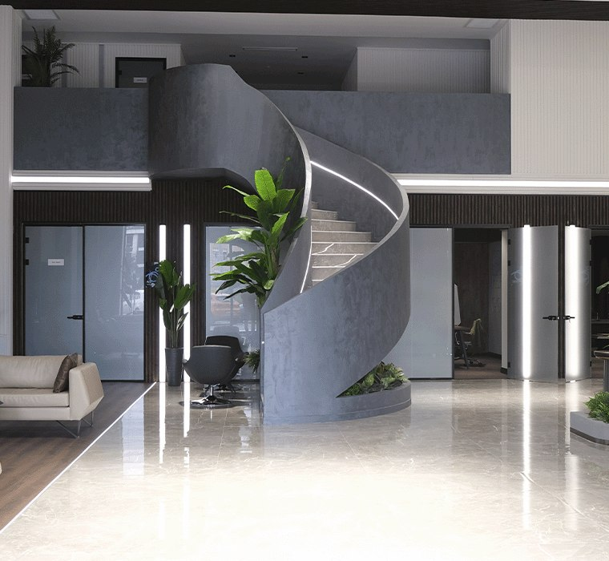
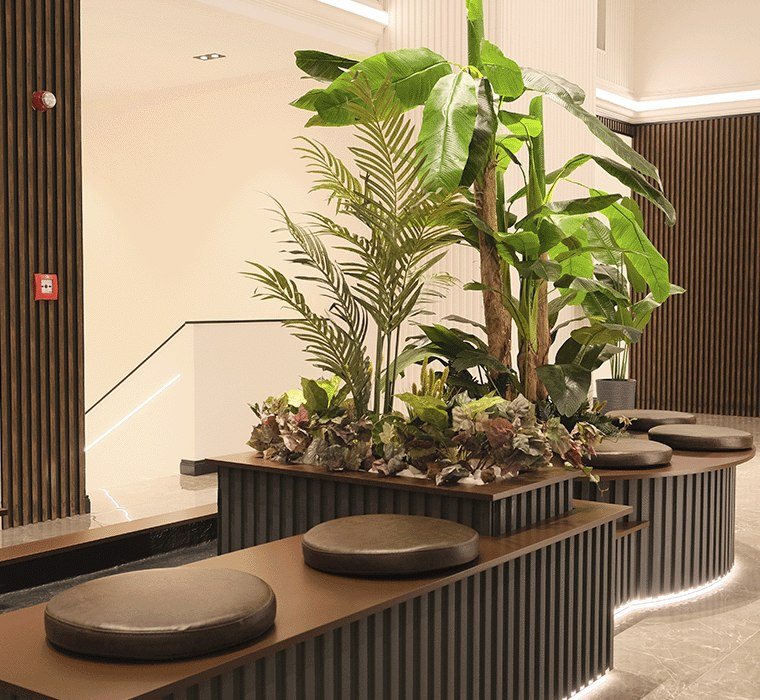
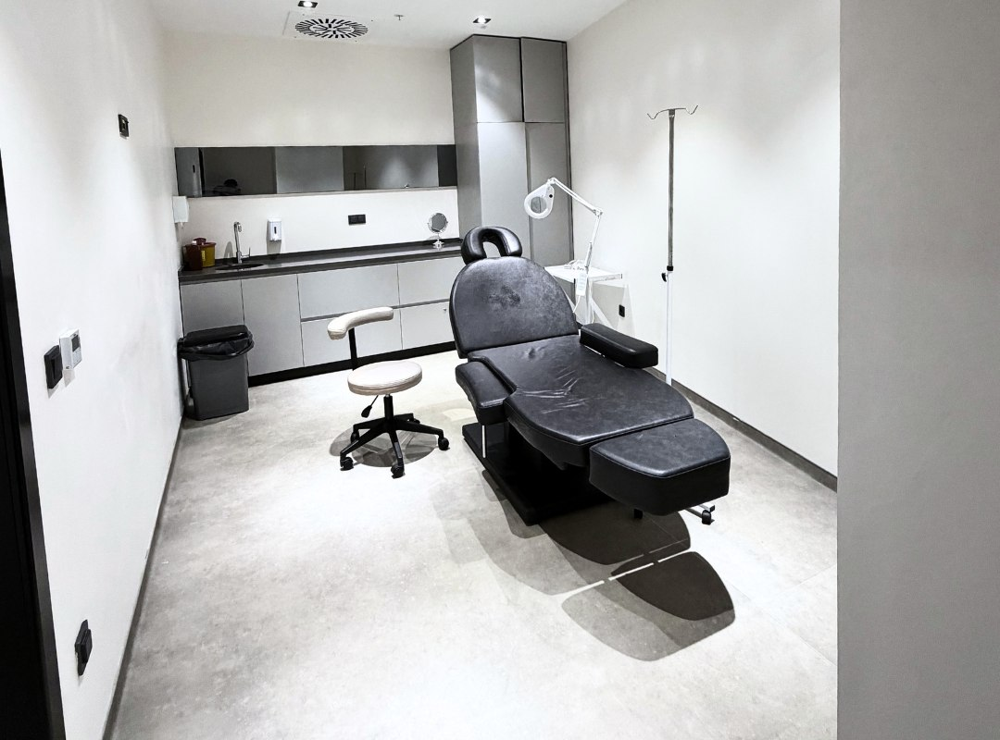

Hair transplant patients
Patients looking for hairline planning, crown coverage, donor assessment, and a realistic discussion of technique and density.
About Velaxa
Velaxa focuses on hair transplant, dental implants, crowns, and smile makeovers. The site is built to help patients understand the treatments, see the clinical environment, and send the right files for review.
Who we treat
Patients looking for hairline planning, crown coverage, donor assessment, and a realistic discussion of technique and density.
Patients who need imaging review, implant planning, prosthetic direction, and a structured understanding of staged treatment if needed.
Crown and smile makeover cases that need shape, shade, symmetry, and long-term function discussed together.
English, Russian, and Romanian-speaking patients who want a straightforward route into consultation.
Dental doctors
Oral and Maxillofacial Surgery
Implant and Prosthetic Dentistry
Restorative and Aesthetic Dentistry
Clinic environment

Reception and waiting areas used to create a calm first impression.

Architectural detail used to support a polished and consistent clinical environment.

Selected detail view used to reinforce the clinic environment without relying on generic stock imagery.

One of the real treatment spaces used to support the hair transplant service pages.

Dental chair and room setup used across the implant and smile-related pages.

Imaging and scan review remain a central part of implant and broader dental planning.
Start your case review
Hair photos, smile photos, or a panoramic X-ray usually give enough detail to begin the first discussion.